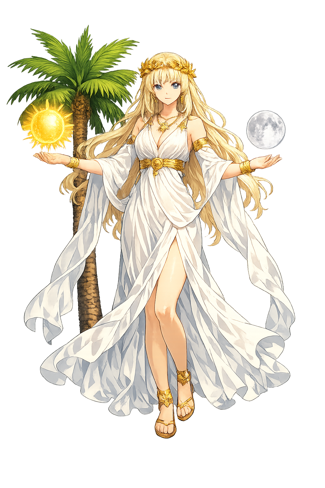

The Authentic Orthography
Birthplace of Apollo · Clear, visible (from δῆλος)

Unicode restoration and ASCII comparison
Δῆλος
The name in its original Greek form. Dêlos (Δῆλος) is attested in the source tradition — “Clear, visible (from δῆλος)”. Its long vowels and acute accents carry the full phonetic and orthographic weight of the source tradition.
delos
Reduced to plain delos, the name loses everything that made it specific: long vowels and acute accents. What remains is an ASCII string that machines can parse but that no longer speaks with its original voice.
Dêlos
The Unicode restoration recovers what ASCII flattened. Dêlos restores long vowels and acute accents, returning the name to its original written dignity. The domain encodes to Punycode, but the browser displays the truth.
Dêlos.com → xn--dlos-gpa.com
The non-ASCII characters in Dêlos are encoded while the ASCII remains visible. To the DNS, it is Punycode. To humanity, it is Dêlos.
How Dêlos is preserved in writing
A bespoke provenance study for Dêlos is being prepared by the PUNICODEX scholarly team.
Contribute scholarly provenance →How Dêlos was spoken
Birthplace of Light, Sacred Harbour, and Open Market
Dêlos is the smallest great place in Greek religion: a bare rock of three square miles that became the holiest island in the Aegean — the birthplace of Apóllōn and Ártemis — and then, by a turn of history, the busiest free port of the Hellenistic world.
Lētō, refused by every land fearing Hēra, found refuge on the floating isle — and light was born there twice.
The island's single hill, giving Apóllōn his epithet Kynthios and climbers the Aegean's best panorama.
The Naxian lions of ca. 600 BCE, still facing the Sacred Lake they were carved to guard.
Rome's gift of 166 BCE: a duty-free harbour that made Dêlos the entrepôt of the eastern Mediterranean.
Stories of Dêlos
The Homeric Hymn to Apóllōn gives the island a voice: Dêlos speaks, fears the god's power, and is promised eternal fame if she receives his birth — the founding charter of Aegean sanctity.
Hounded by Hēra's jealousy, the pregnant Lētō was refused by every island and mainland city until barren, drifting Dêlos accepted her — asking only that Apóllōn build his great temple there. Lētō swore by the Styx, clasped a palm tree, and after nine days of labour bore Apóllōn and Ártemis between the mountain and the lake.
Pindar and Callimachus preserve the tradition that Dêlos once floated freely over the sea, visible in no fixed place, until the twins' birth pinned her down — Zeús fastened her with adamant chains to the sea floor. Her other ancient name, Astería ("the starry"), recalls the wandering light that became a fixed point.
To keep the god's birthplace pure, Athens purified Dêlos twice: Peisístratos removed the graves visible from the temple, and in 426/5 BCE the Athenians cleared the whole island of burials and forbade anyone to be born or to die there — the sick and pregnant ferried to Rheneia. A law of hospitality: the island belonged to the god alone.
After the Persian Wars, the Greek alliance against Persia kept its common treasury in Apóllōn's sanctuary on Dêlos — the neutral sacred bank of the Aegean. In 454 BCE Athens moved the funds to the Parthenon, converting an alliance into an empire; the island's political star faded even as its sanctity endured.
Dêlos teaches that insignificance can be chosen. A rock with no water, no soil, and no harbour worth the name became the centre of a world because it alone said yes — and then became rich because everyone remembered that it had. Sanctuary and market, poverty and splendour: the island holds both without apology.
Enter Extended Lore